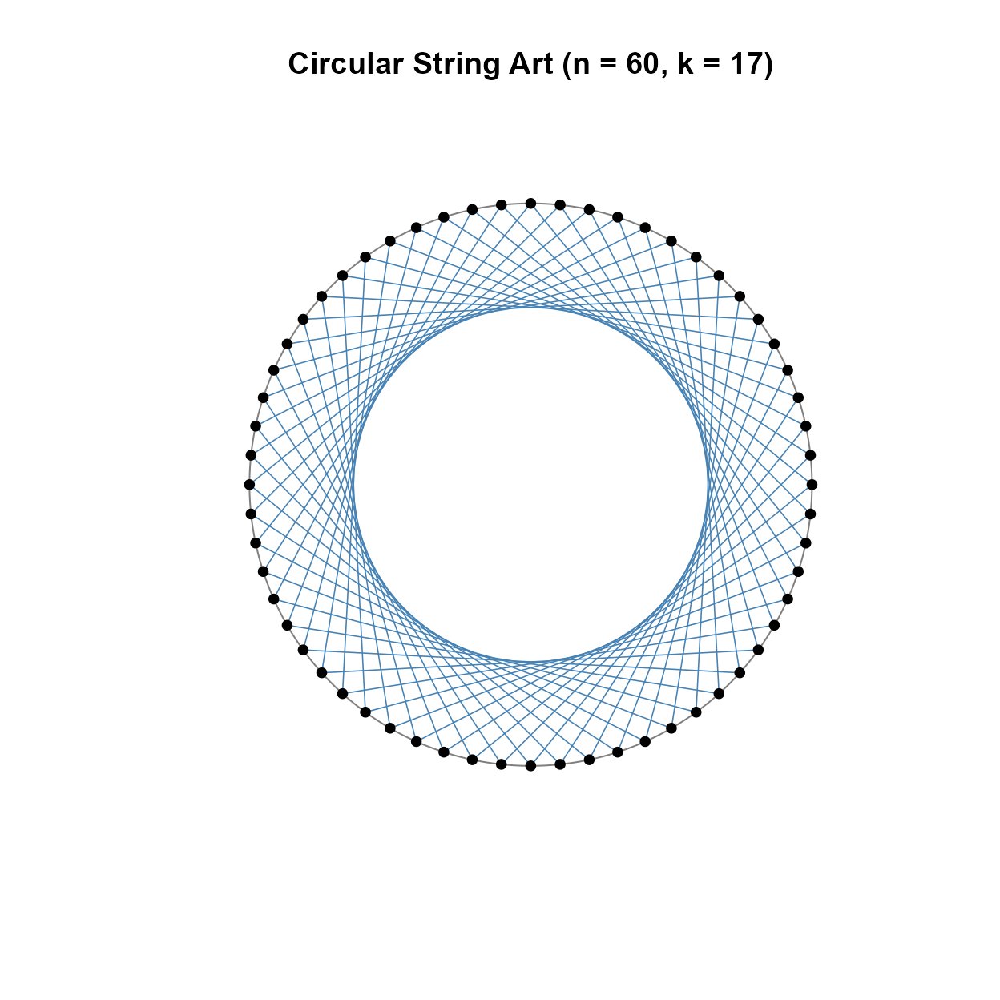
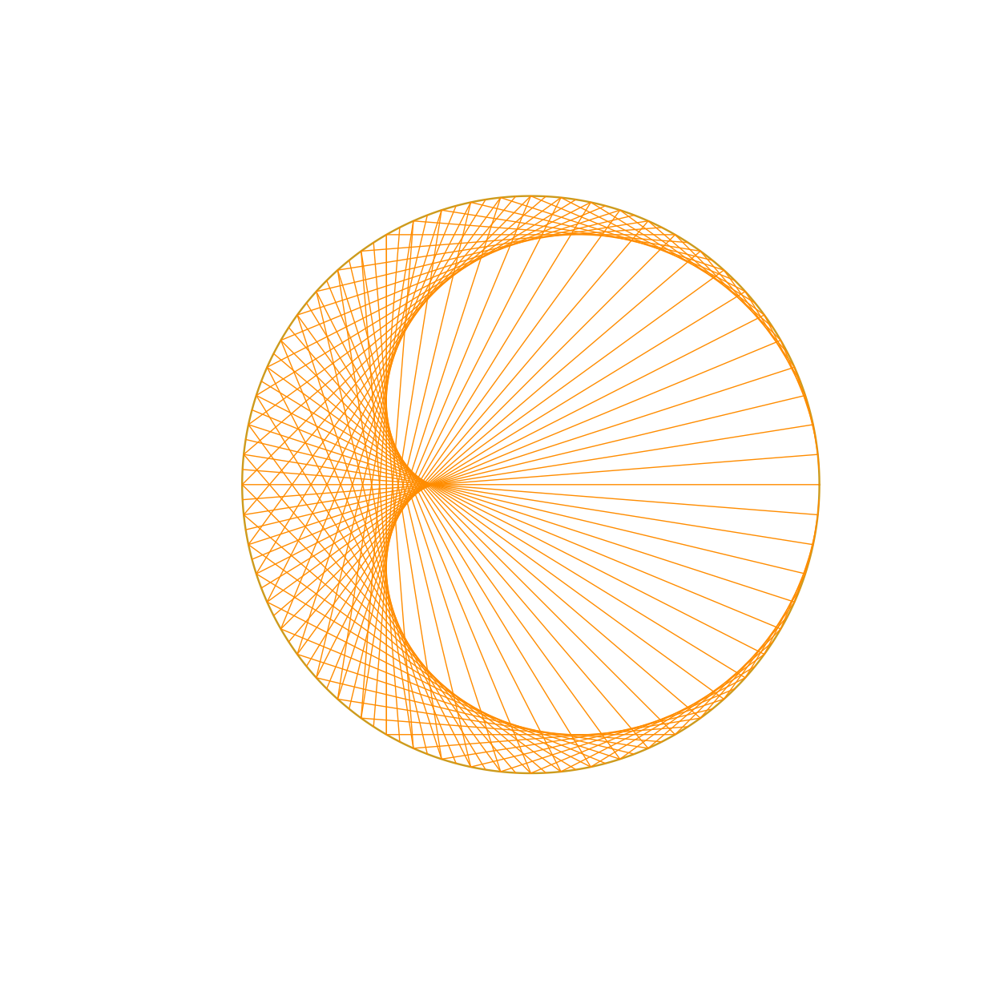
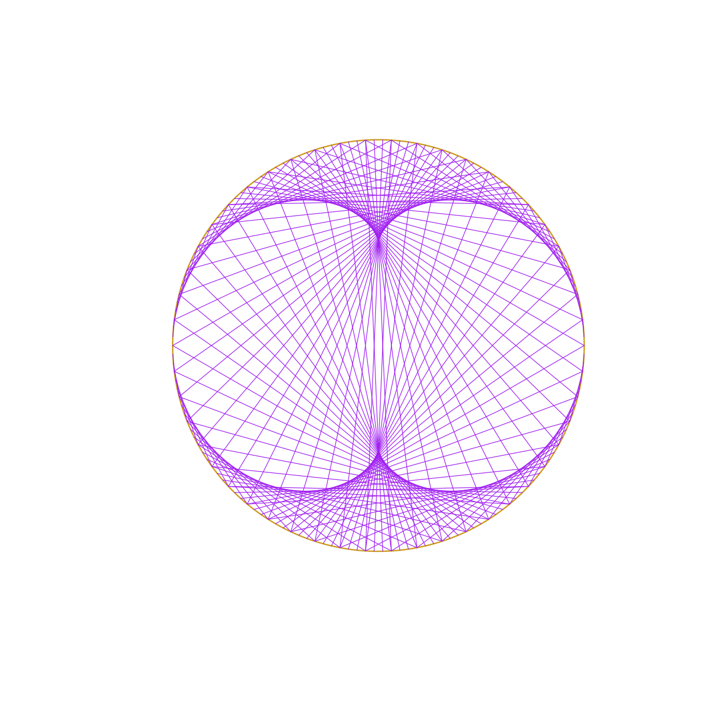
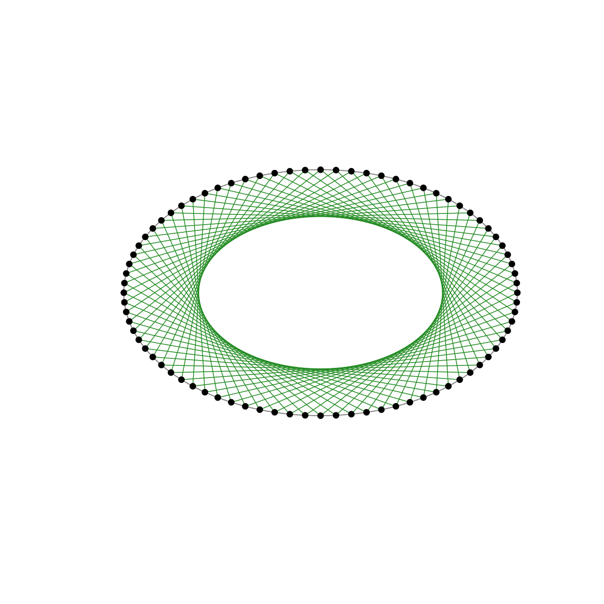
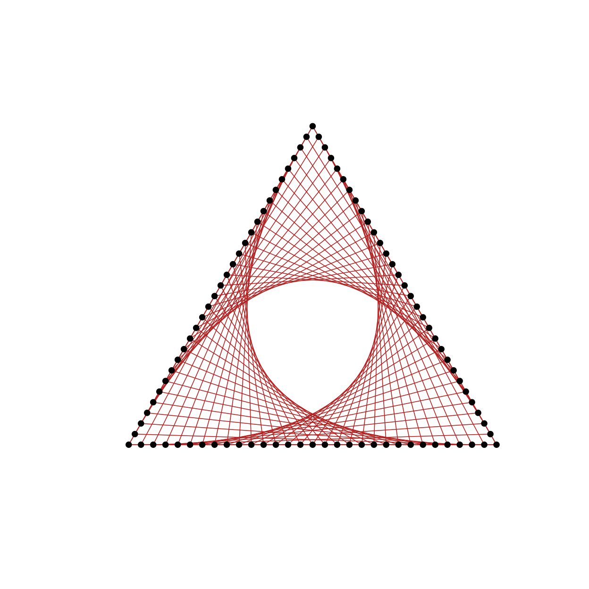
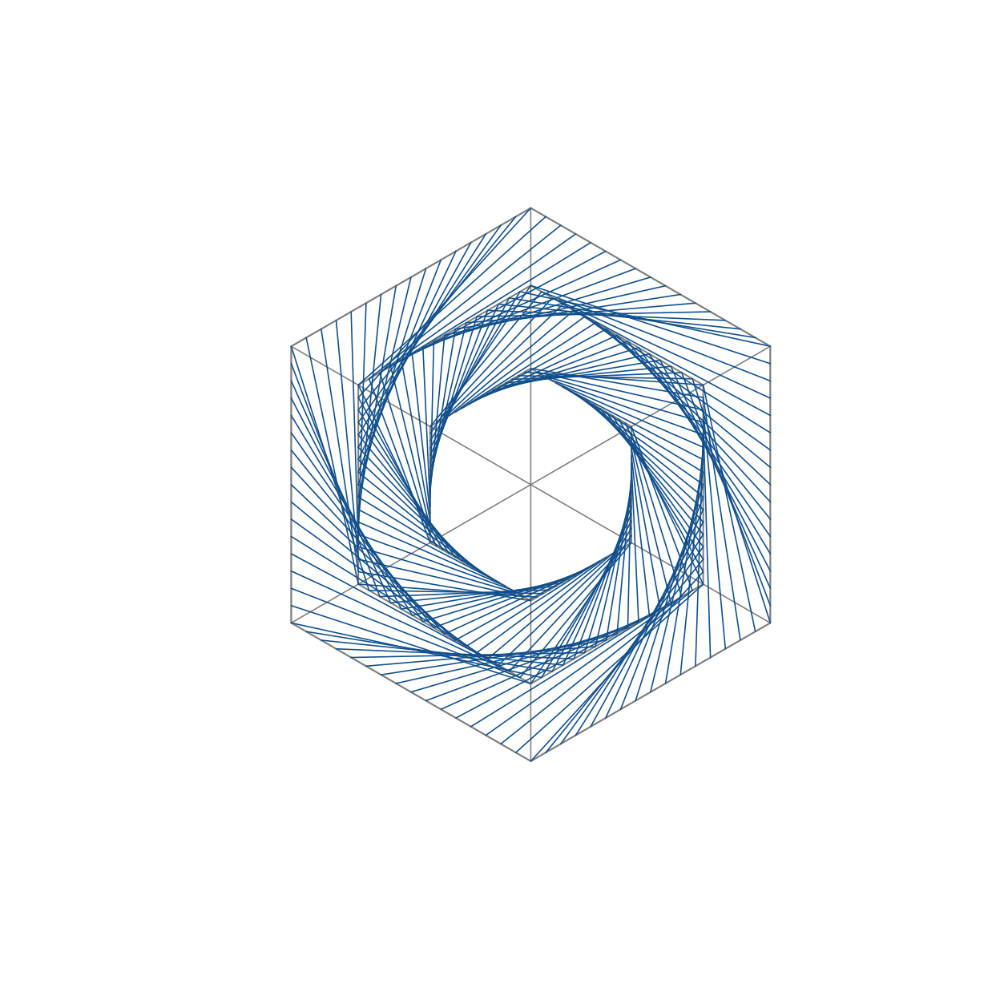
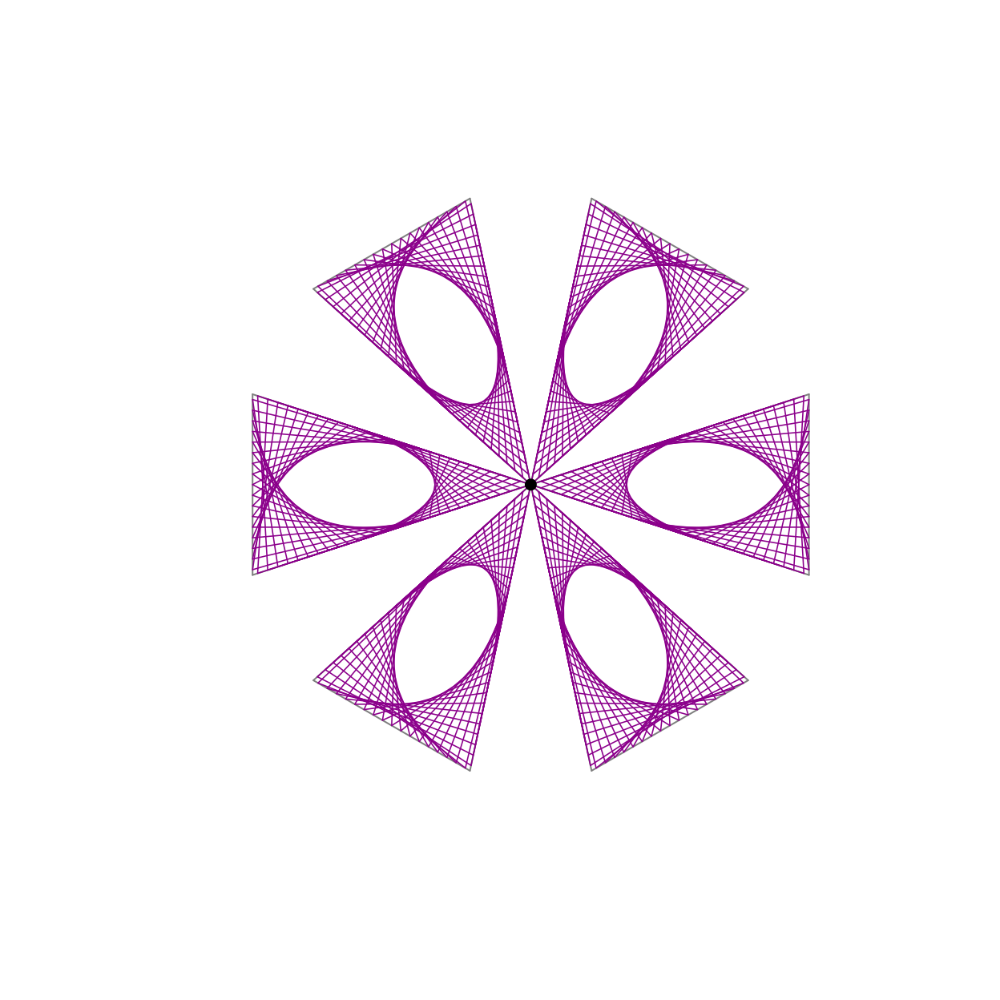
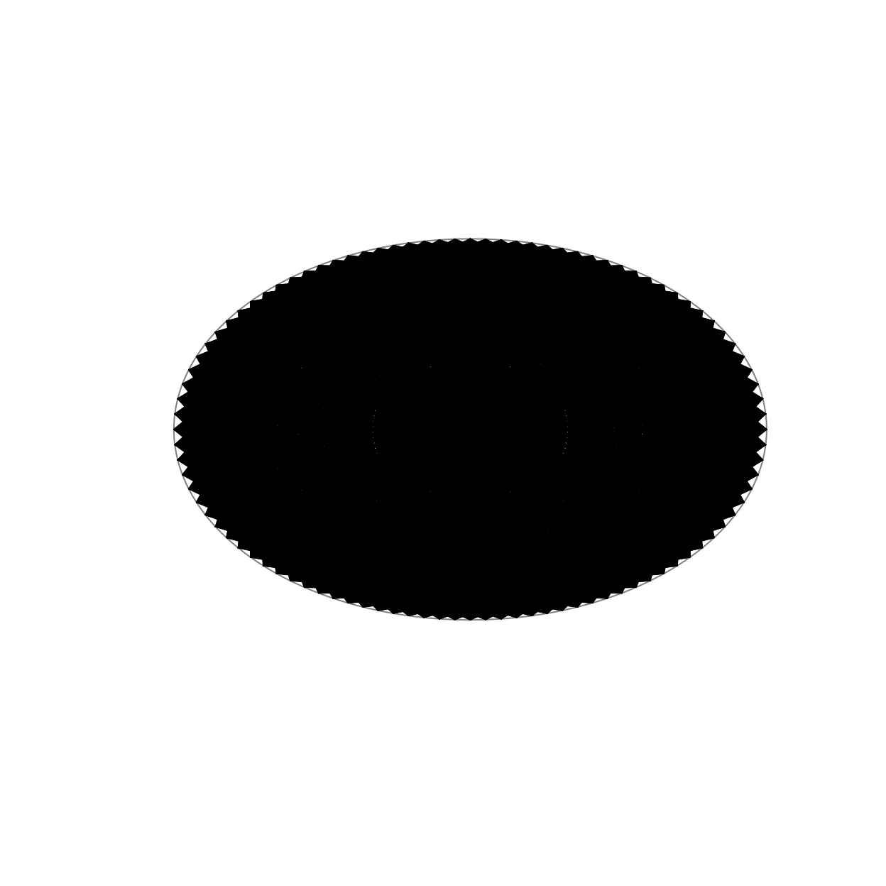

Creating String Art Figures with stringArt
Ivo Moreira Barbosa and Fernando de Souza Bastos
Source:vignettes/stringArt-introduction.Rmd
stringArt-introduction.RmdIntroduction
The stringArt package was developed as part of the
Professional Master’s Program in Mathematics in National Network
(PROFMAT). It is one of the results of the master’s dissertation of Ivo
Moreira Barbosa, under the supervision of Professor Fernando de Souza
Bastos, from the Department of Statistics of the Federal University of
Viçosa.
The purpose of the project is to provide a pedagogical product that supports mathematics teachers in the teaching of Geometry and related mathematical concepts through a playful, visual, practical, and computational approach. The package combines the artistic appeal of String Art with mathematical ideas such as points, segments, polygons, modular arithmetic, symmetry, envelopes of straight lines, cycles, and total string length.
The package also supports the production of peg templates, connection tables, audit information, and interactive visualizations through a Shiny application. The main goal is to help teachers create classroom activities in which students can move between concrete manipulation, visual exploration, and mathematical reasoning.
General structure
The functions in stringArt follow a common interface
whenever possible. The main arguments are:
-
n: number of pegs or points; -
k: step, factor, or rule used to create the connections; -
col: line color; -
lwd: line width; -
plot: whether the figure should be plotted; -
show_points: whether the pegs should be shown; -
show_labels: whether the peg labels should be shown; -
verbose: whether detailed audit information should be printed.
Each function returns an invisible list containing at least:
-
pegs: coordinates and identifiers of the pegs; -
connections: table with the string connections; -
total_length: total string length; -
audit: audit information about the construction; -
meta: metadata about the figure and parameters.
For compatibility with previous versions and with the Shiny
application, returned objects may also include Portuguese aliases such
as pregos, conexoes, and
comprimento_total.
Circular String Art
The function stcircle() creates pegs equally spaced on a
circle and connects each peg to another peg according to an additive
modular step. This is useful for exploring modular arithmetic, cycles,
symmetry, and polygons.
stcircle(
n = 60,
k = 17,
col = "steelblue",
lwd = 0.8,
show_points = TRUE,
show_labels = FALSE,
verbose = FALSE
)
Circular String Art generated by additive modular connections.
The result can also be stored without producing a plot.
circle_res <- stcircle(
n = 24,
k = 5,
col = "steelblue",
lwd = 1,
plot = FALSE,
verbose = FALSE
)
names(circle_res)
#> [1] "pegs" "connections" "total_length" "audit" "meta"
head(circle_res$connections)
#> connection_index from to x_from y_from x_to y_to length
#> 1 1 1 6 1.0000000 0.0000000 2.588190e-01 0.9659258 1.217523
#> 2 2 2 7 0.9659258 0.2588190 6.123032e-17 1.0000000 1.217523
#> 3 3 3 8 0.8660254 0.5000000 -2.588190e-01 0.9659258 1.217523
#> 4 4 4 9 0.7071068 0.7071068 -5.000000e-01 0.8660254 1.217523
#> 5 5 5 10 0.5000000 0.8660254 -7.071068e-01 0.7071068 1.217523
#> 6 6 6 11 0.2588190 0.9659258 -8.660254e-01 0.5000000 1.217523
circle_res$total_length
#> [1] 29.22055Cardioid-like String Art
The function stcardioid() creates a circular String Art
figure using a multiplicative modular rule. This construction is useful
for exploring multiplication tables, modular arithmetic, cycles, and
cardioid-like visual patterns.
stcardioid(
n = 120,
k = 2,
col = "darkorange",
lwd = 0.7,
show_points = FALSE,
show_labels = FALSE,
verbose = FALSE
)
Cardioid-like String Art generated by a multiplicative modular rule.
The value of k changes the multiplication rule and
generates different visual structures.
stcardioid(
n = 150,
k = 3,
col = "purple",
lwd = 0.6,
show_points = FALSE,
show_labels = FALSE,
verbose = FALSE
)
Cardioid-like String Art with a different multiplicative factor.
Elliptical String Art
The function stellipse() places pegs on an ellipse and
connects them according to an additive modular step. This figure extends
the circular construction to an elliptical frame and supports
discussions about parametric curves, scaling, and geometric
transformations.
stellipse(
n = 80,
k = 23,
a = 1.6,
b = 1,
col = "forestgreen",
lwd = 0.8,
show_points = TRUE,
show_labels = FALSE,
verbose = FALSE
)
Elliptical String Art generated by additive modular connections.
Triangular String Art
The function sttriangle() places pegs along the boundary
of an equilateral triangle. The connections are generated according to a
step rule and may be used to explore polygons, perimeter, symmetry, and
geometric patterns on triangular frames.
sttriangle(
n = 90,
k = 29,
col = "firebrick",
lwd = 0.8,
show_points = TRUE,
show_labels = FALSE,
verbose = FALSE
)
String Art on an equilateral triangular frame.
Hexagonal flower
The function sthexaflower() generates a figure based on
concentric hexagonal circuits. It is useful for exploring symmetry,
rotations, repeated patterns, and geometric structures related to
regular polygons.
sthexaflower(
n = 96,
k = 17,
col = "dodgerblue4",
lwd = 0.8,
show_points = FALSE,
show_labels = FALSE,
verbose = FALSE
)
Hexagonal flower String Art pattern.
Radial String Art
The function stradial() generates rotated triangular or
radial modules. This construction supports discussions about rotations,
angular displacement, repeated modules, and visual composition.
stradial(
n = 72,
k = 19,
col = "darkmagenta",
lwd = 0.8,
show_points = FALSE,
show_labels = FALSE,
verbose = FALSE
)
Radial String Art generated from rotated modules.
Region-based String Art
The function stregion() places pegs along a contour. If
no contour is supplied, the function uses a default contour. This allows
teachers to explore String Art beyond standard geometric frames and
connect the construction with curves, boundaries, and customized
shapes.
stregion(
n = 100,
k = 31,
col = "black",
lwd = 0.7,
show_points = FALSE,
show_labels = FALSE,
verbose = FALSE
)
String Art generated from a default contour.
A custom contour may also be used, depending on the implementation of the function. The general idea is to provide a set of ordered boundary points and let the function sample pegs along this contour.
Peg templates
In addition to complete String Art figures, the package can be used to produce peg templates without strings. This is useful when the teacher wants to print a template for a manual classroom activity.
Depending on the final implementation of each function, this can be done either by using a specific argument for templates or by plotting the pegs from the returned object.
template_res <- stcircle(
n = 36,
k = 7,
plot = FALSE,
verbose = FALSE
)
plot(
template_res$pegs$x,
template_res$pegs$y,
asp = 1,
pch = 19,
xlab = "",
ylab = "",
axes = FALSE,
main = "Peg template"
)
text(
template_res$pegs$x,
template_res$pegs$y,
labels = template_res$pegs$id,
pos = 3,
cex = 0.7
)Example of a peg template produced from a returned object.
Audit and connection table
The returned object makes it possible to inspect the construction numerically. This is useful for connecting the artistic object with mathematical reasoning.
res <- stcircle(
n = 12,
k = 5,
col = "steelblue",
lwd = 1,
plot = FALSE,
verbose = FALSE
)
res$total_length
#> [1] 23.18222
res$audit
#> [1] "String Art audit"
#> [2] "Figure: circle"
#> [3] "Number of pegs: 12"
#> [4] "Step k: 5"
#> [5] "Radius: 1.000000"
#> [6] "Rule: to = ((from + k - 1) %% n) + 1"
#> [7] "Number of connections: 12"
#> [8] "Cycle count: 1"
#> [9] "Cycle length: 12"
#> [10] "Total string length: 23.182220"
#> [11] "Plot mode: complete figure"
res$connections
#> connection_index from to x_from y_from x_to
#> 1 1 1 6 1.000000e+00 0.000000e+00 -8.660254e-01
#> 2 2 2 7 8.660254e-01 5.000000e-01 -1.000000e+00
#> 3 3 3 8 5.000000e-01 8.660254e-01 -8.660254e-01
#> 4 4 4 9 6.123032e-17 1.000000e+00 -5.000000e-01
#> 5 5 5 10 -5.000000e-01 8.660254e-01 -1.836910e-16
#> 6 6 6 11 -8.660254e-01 5.000000e-01 5.000000e-01
#> 7 7 7 12 -1.000000e+00 1.224606e-16 8.660254e-01
#> 8 8 8 1 -8.660254e-01 -5.000000e-01 1.000000e+00
#> 9 9 9 2 -5.000000e-01 -8.660254e-01 8.660254e-01
#> 10 10 10 3 -1.836910e-16 -1.000000e+00 5.000000e-01
#> 11 11 11 4 5.000000e-01 -8.660254e-01 6.123032e-17
#> 12 12 12 5 8.660254e-01 -5.000000e-01 -5.000000e-01
#> y_to length
#> 1 5.000000e-01 1.931852
#> 2 1.224606e-16 1.931852
#> 3 -5.000000e-01 1.931852
#> 4 -8.660254e-01 1.931852
#> 5 -1.000000e+00 1.931852
#> 6 -8.660254e-01 1.931852
#> 7 -5.000000e-01 1.931852
#> 8 0.000000e+00 1.931852
#> 9 5.000000e-01 1.931852
#> 10 8.660254e-01 1.931852
#> 11 1.000000e+00 1.931852
#> 12 8.660254e-01 1.931852The connection table can be used to discuss the order of the strings, the length of each segment, and the total amount of string needed to construct the figure physically.
Shiny application
The package also includes an interactive Shiny application. After installing the package, the app can be launched locally with:
stringArt::run_stringArt_app()The Shiny interface was designed as a simple classroom-oriented product. Its main controls are:
- number of pegs;
- step or factor;
- line color;
- line width;
- show pegs;
- show labels;
- show peg template without strings;
- show audit in the console.
The Shiny app is not required to use the package functions. It is provided as an additional educational interface for teachers and students.
Final remarks
The stringArt package was designed to support the
teaching and learning of Mathematics through an approach that combines
computation, visual thinking, and hands-on activity. The package allows
teachers to generate complete String Art figures, peg templates,
connection tables, and total string length information.
In classroom practice, these resources can be used to promote mathematical investigation, student engagement, and connections between Geometry, modular arithmetic, symmetry, and artistic creation.